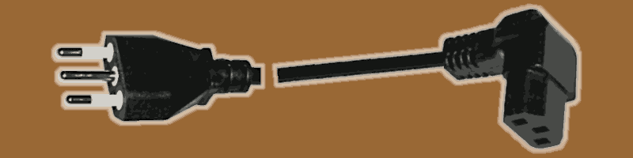

Dual PSU for Esprimo P910 installation
This article is the natural prosecution of the previous one.WARNING!
This document is working in progress.
Dual PSU installation
Just to recap, the main problem of providing 225W TDP, 300W peak to the Nvidia Tesla K80 was mainly related with the proprietary power system embedded into the Fujitsu Esprimo P910 and therefore too hard to change without doing a bricolage that would far beyond the educational scope of this project. Therefore an industrial Flex size PSU has been chosen, which has been designed and built to power the ATX PC-based automated point of sales (PoS). For this reason it is particularly small, compared to the standard ATX power supply unit and cheap, compared with the PC-gaming market segment.ⓘ
The new PSU flex ATX provides 2 molexes and 1 CPU 4-pin connectors. Hence, it offers two ways of powring the 225W TDP (peak 300W) Tesla K80 card, each one with a different adapater.
Each molex brings a 12V line supporting up to 11A for a total of 264W of constant current flow, hence a TDP figure. Which is 85% of the K80's TDP and 114% of the peak load.
The CPU 4-pin cable is made by the same 2mm diameter (including the sleeve) wires used for the molexes. Hence, the supported power with this solution is 132W, a half.
In the last case, the K80's TDP board should limited accordingly, using the nvidia-smi tool.
This PSU's height is almost the same as a standard DVD-ROM reader, shorter and less wide (82 x 150 x 41 mm). For a confrontation, the hosted DVD-ROM was 150 x 165 x 42 mm. Plus it does not have the standard holes to receive the plate used into P910 to lock the DVD-ROM in its place.
Moreover, once this PSU replaces the DVD-DOM, it offers the 3 pole male plug on the front side of the case which is not particularly comfortable. It is safe but the cable is much more exposed to a risk of being accidentally unplugged and aesthetically unpleasant.
For these reasons, in creating a custom frame adapter, I built it in a way in which it will be easy in the near future to move the 3 pole C14F plug on the back of the tower case.

right click menu to enlarge (x2) the image
Venting system
About the venting system, I was considering to use 2 fan 5020 or 5015 to place outside the back of the case, in front of the 2 PCI slots engaged by the Tesla K80 for sucking air through its airflow tunnel, as per its factory design, while the main fan into the case would push air into it, as show here below in the image.
right click menu to enlarge (x4) the image
New challenges
Enlarging the image below and looking at the right side of the Nvidia K80 card, we can be assured that fitting a couple of 12cm fans overthere, in that narrow and messy space, will be not easy, if it is possible altogether, and it requires some kind of cabling rearrangement, at least.
right click menu to enlarge (x4) the image


ⓘ
For those who have a professional practice of 220V electric cabling, and the related authorisations and certifications to operate on that lines, the most customised solution is about wiring a C14F, usually protected by a 10A-220V fuse and at cheap price €1.39 also including a on/off led-lighted button. This might be done without even modding the grid but leveraging its reasonably large hexagonal pattern to pass through the cables to wire and fixing the plug externally to the grid.
In this scenario, a knot before the grid and another one after will fix the cable to the grid in a way it will not be able to be pulled by one side or another. Obviously, having the care to add an extra protection to the cable insulating sleeve towards damages by accidental pulls or frictions against the metall grid. Some heating shrinking guaina can provide a reasonable isolation in the wiring plug/switch pins while an electric plastic box will protect everything and hide the fixing bolts.
In Italy, respecting CEI-UNI normatives and standards, a light point made by a professional electrician is priced between €25 and €40 each plus the cost of the electric material, on average. From many light points to few the average unitary price increases. So, we can reasonably assume that such a mod will cost around 50 bucks. As much as bucks, I have paid the whole P910 with 16GB but without any data storage and expedition apart.
If you conclude, by all of these, that it is better for you to go to work as an electrician instead of IT guys, well... that's another story!
Preparing for installation
The two 12cm fan height is 25mm which is too much to fit between the 2nd floor of the case and the K80 that should necessarily be installed in the second PCI-express slot because the other is functionally a 4x despite it having a 16x size. Moreover, a 12 cm fan does not fit in the middle data storage bay, also. A 10 cm could fit and work, assuming the openings in that bay can vehiculate enough air-flow. Under such a tough scenario, another solution is necessary. Assuming that the two fans mounted on the new PCI frame can be installed into the first PCI-express slot, then they will cool the CPU and the two power supply units. At that point, it will be possible to converge all the main 12cm fan air-flow into the K80's cooling channel and leverage its design by factory .
right click menu to enlarge (x2) the image
About PCI-e slot lost
Engaging the PCI-express first slot is not a great idea because it will be lost. However, considering that this is a dedicated system, such limitation does not seem so impactful. Unless, someone wishes to use the PCI-e 4x to leverage a non-SATA storage device with a PCI-e adapter. Which usually happens when a spare part from a previous machine is available for free and it is worth reusing it. Considering that a 128GB or a 512GB SATA3 SSD can be bought for €11 or €28 on Amazon Italia with Prime expedition included, the sacrifice of the 4x PCI-e slot with the fans does not seem to compromise the overall value of the final system configuration. Moreover, the USB 3.0 data transfer is 500 Mb/s while the SATA offers 600 MB/s but the USB 3.1+ and 3.2 much more. However, an alternative to keep free the case after redirecting the 12cm main fan, can be installing fan(s) on the rear grid in order to push the fresh air into the case, cooling the CPU and then being sucked out by the two PSUs. A 92mm fan, which is the largest size that can be fixed on that grid, costs the same price of the two 12cm fans that I have ordered. The rear upper grid can internally host two 6cm fans, as an alternative. I am confident that for the 8+cm fan market segment the range of choice will be comparable with the 12cm fan market one, or a little less. I am not sure about saying the same for the 6cm but I did not explore that option in depth, yet. In one way or another, it sounds reasonable that the main fan will be converted for cooling the K80 instead of the CPU and the system in general. Which brings to the need to supply the lost air-flow with another venting system.Tools list
Here below is a list of almost all tools I have used, some reported in full specs and prices because they have been as useful as nearly indispensable.
ⓘ
As you can imagine, cleaning the thermal radiators is an operation which is quite important considering that cumulating dirty inside the channel and spaces between fins can seriously affect their performance, when not also obstructing the air-flow channel. An important operation that usually people forget or overlook or underestimate.
WORKING IN PROGRESS - YET TO BE COMPLETED
External sources
Power limiting a GPU using the Linux systemd and Nvidia smiShare alike
© 2025, Roberto A. Foglietta <roberto.foglietta@gmail.com>, CC BY-NC-ND 4.0